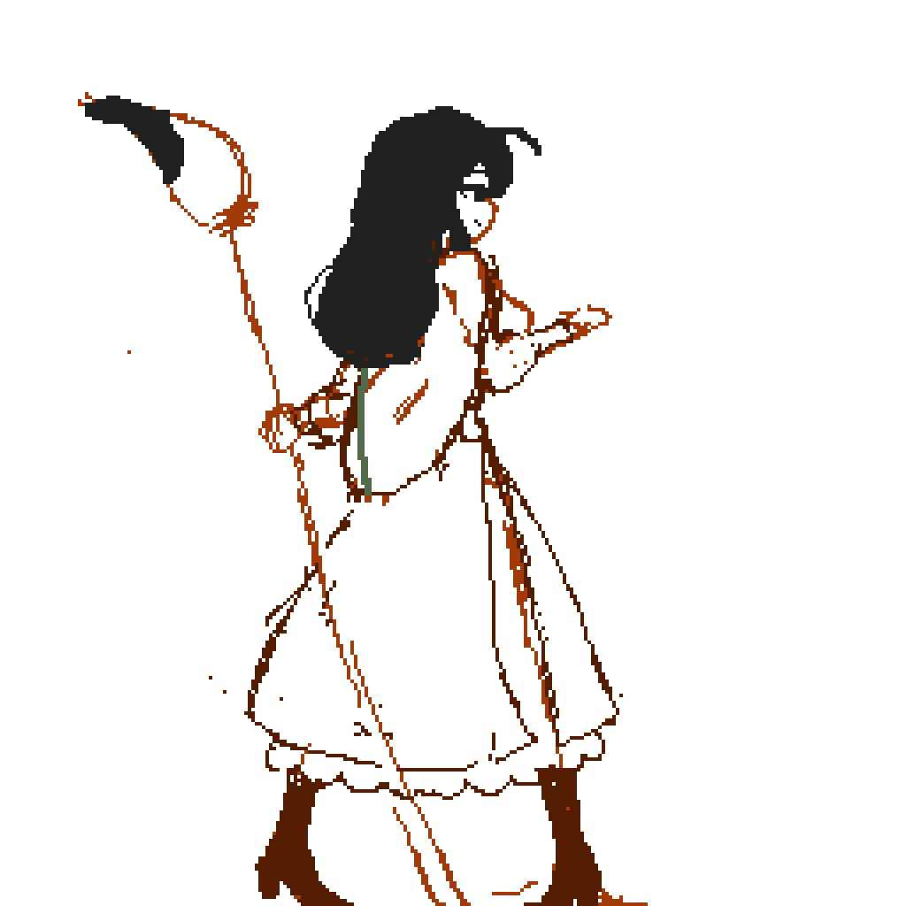
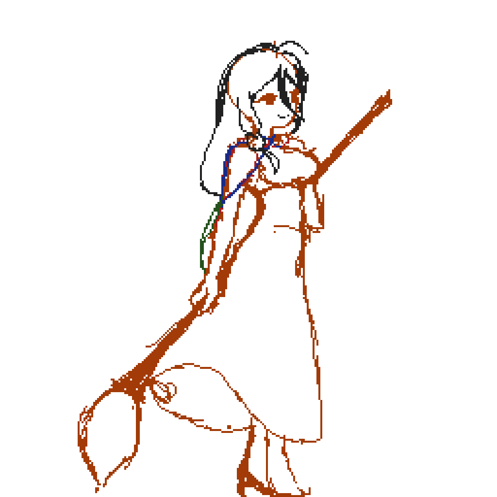

Studio site is live! First deployed today. Just the bare boned skeleton so far.
Art and mascot in progress. The skeleton will be clothed soon!
In reference to the mascot; I have an idea for a funny little old and wise bird with an attitude that contrasts with another mascot meant to make people feel warm, safe and welcome. Everyone needs a bit of that nowadays.
I also have some UI stylings ready. Basic UI buttons and menu screens.
Base concept for the first game in progress. Decided animations will be made in Pixel Art Studio for IOS. Made some frames already for idle playable character.
However, I made 2 idles because one I felt was too jumpy. The other I feel the skirt sways too much. I will adjust later after priorities. I'll post both for docu purposes:

I was thinking while drawing this that she uses the paintbrush as a spear. And I prioritize snappy yet fluid animations that feel good. But it might be too energetic for her personality. Meanwhile,

I like the stillness in this one. She's confident, smiling, having fun. Her hips should move, but her skirt is suggesting she is hula-hooping. I may go with this one after toning down the skirt.
That's all for today. Let's work on clothing the skeleton a bit next!